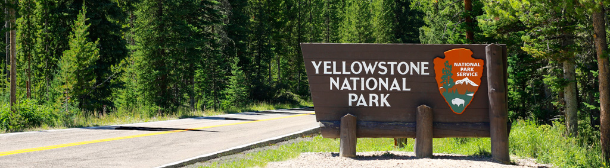
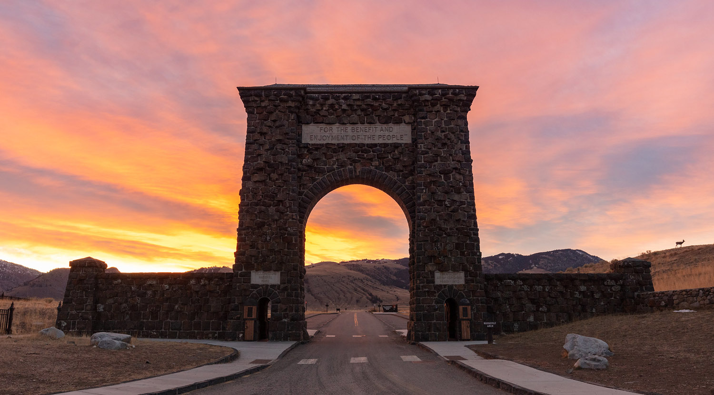

Welcome to the Yellowstone National Park Website
Yellowstone national park is located in Wyoming, Montana, and Idaho. Yellowstone is the first national park, established in 1872, and spans about 3500 square miles. The park sits on an active volcano, and has numerous natural features including geysers, waterfalls, springs, wildlife, and much more to explore.
Whether you come to the park to hike, spot wildlife, or take in the beautiful views, Yellowstone has it all. Yellowstone has twelve campgrounds and nine lodges. There are ten visitors' centers that offer information regarding the park as well as other facts about the history, hiking options, and recent wildlife sightings.
